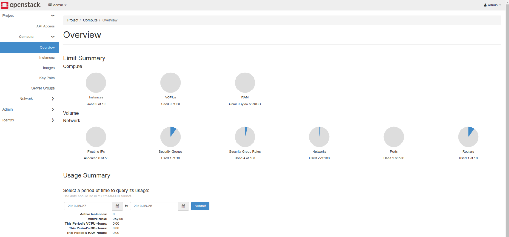
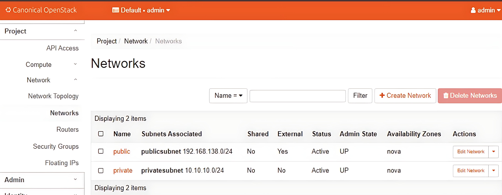
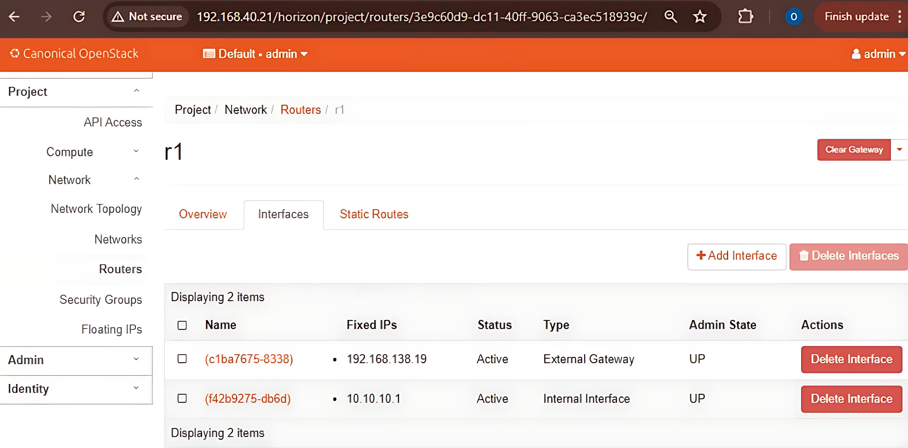
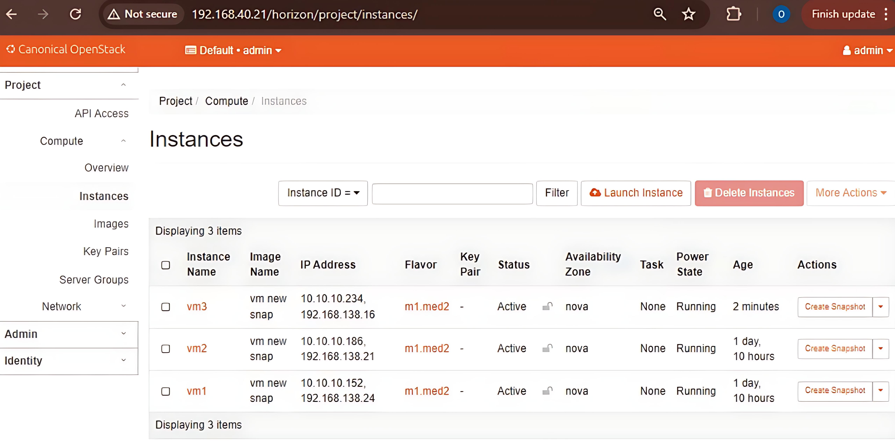
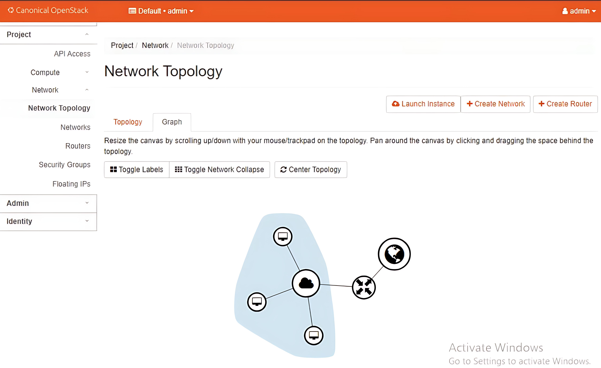
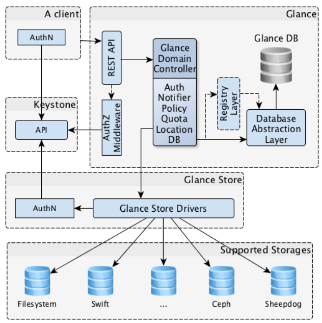

OpenStack: Private Cloud System
Introduction
Load Balancing in OpenStack Cloud: Investigating Intelligent Data Structures. This project is a deep dive into the advanced algorithms and data structures that power load balancing in OpenStack, enabling enhanced service management and efficiency.
OpenStack is a prominent open-source cloud computing platform that provides users with a convenient way to manage large-scale cloud environments. It leverages complex algorithms and data structures to ensure efficiency, reliability, and scalability in load balancing.
Objectives
- To understand the significance of advanced algorithms and data structures in efficient load balancing within OpenStack.
- To explore various business use cases and applications of these algorithms and data structures.
- To analyze the impact of these technologies on user experience and system performance.
- To provide insights into data analysis and the role of intelligent data structures in load balancing.
Visuals
- Complete OpenStack Setup: This image shows the complete OpenStack setup used for the project. 
- Networks Created: This image displays the networks created within the OpenStack environment. 
- Router: This image shows the router configuration within the OpenStack setup. 
- Instances Launched: This image illustrates the instances launched in the OpenStack environment. 
- Topology: This image illustrates the topology created in the OpenStack environment. 
- Extented topology and network view: This image illustrates the large topology upto which it can be extended for large scale applications.
.jpeg)
System Model
The following diagrams represents the over all system design of the OpenStack private cloud service
Algorithms and Data Structures: Business Use Cases and Applications
We will explore mainly two types of Business Cases and the Algorithmic way to understand and impliment them.
Routing Algorithms
Dijkstra’s Algorithm
Used for the efficient transfer of packets from source VM to the destination VM in the OpenStack environment with the non-negative metrix.
Advantages
- Optimal Pathfinding with Polynomial Time Complexity:
Efficiently finds the shortest path in graphs with non-negative weights.
Time Complexity:O((V + E) log V)using binary heap, orO(V²)using a simple array. - Deterministic and Greedy Nature: Guarantees globally optimal results by always selecting the closest unvisited node, ensuring reliable path computation in systems like OSPF or OpenStack.
Improvements over Existing Methods
- Faster than Exhaustive Search:
Replaces inefficient exhaustive search methods that had exponential time complexity
O(n!), enabling practical usage in real-time systems. - Improved over Bellman-Ford: Offers better performance than Bellman-Ford on non-negative graphs, thanks to a more efficient greedy approach that scales well in large networks.
Bellman-Ford Algorithm
Used for reliable packet routing between source and destination VMs in OpenStack environments, especially when network links may have negative metrics or require loop detection.
Advantages
- Handles Negative Edge Weights:
Unlike Dijkstra’s algorithm, Bellman-Ford can compute shortest paths even in graphs with
negative edge weights.
Time Complexity:O(V × E) - Detects Negative Weight Cycles: Capable of identifying and reporting cycles that would otherwise cause incorrect shortest path calculations, increasing reliability.
Improvements over Existing Methods
- Broader Applicability than Dijkstra: Dijkstra fails in the presence of negative weights, whereas Bellman-Ford remains functional and accurate in such conditions.
- Improved Reliability in Fault-Tolerant Networks: Before Bellman-Ford, systems relied on brute-force or heuristic methods without guarantees of accuracy in complex weighted graphs. Bellman-Ford introduced a mathematically sound approach.
Prims Algorithm
Used for building loop-free, minimum-cost multicast trees or overlay networks among VMs in OpenStack environments.
Advantages
- Builds Minimum Cost Spanning Tree:
Connects all network nodes (e.g., VMs, switches) with the least total edge weight, ideal for
efficient multicast or group broadcast structures.
Time Complexity:O(E log V)(with Min-Heap and Adjacency List) - Optimized for Dense Graphs: Performs efficiently in dense networks with many interconnections—common in virtualized cloud environments like OpenStack.
- Incremental Tree Growth: Adds the minimum cost edge at each step, allowing for flexible, on-demand expansion of the network topology.
Improvements over Existing Methods
- Bandwidth-Efficient Multicasting: Replaces flooding or redundant link usage with optimal broadcast trees, significantly reducing network congestion and overhead.
- Deterministic Topology Formation: Unlike naive or randomized topology generation, Prim’s algorithm ensures a predictable, efficient connection path structure across VMs.
- Loop-Free and Cost-Effective: Guarantees loop-free routing paths while minimizing the cumulative cost—key in SDN-controlled OpenStack data center deployments.
A* Search Algorithm
A* (A-star) is a graph traversal and pathfinding algorithm. It finds the shortest path from a start node to a goal node efficiently by using:
- g(n): The cost to reach the node n from the start.
- h(n): A heuristic estimate of the cost to reach the goal from node n.
It picks nodes to explore based on the sum f(n) = g(n) + h(n). The heuristic h(n) helps guide the search toward the goal, which makes A* faster than uninformed search algorithms like Dijkstra's.
Advantages
- Heuristic-Guided Optimal Pathfinding:
Uses heuristic functions to estimate remaining cost, allowing it to prioritize promising
paths and find the shortest route efficiently.
Time Complexity:O(E)in practice, faster than uninformed algorithms when a good heuristic is used. - Efficient Resource Utilization: Minimizes network latency and bandwidth consumption by quickly identifying optimal routing paths between VMs, users, and data centers.
- Adaptable to Dynamic Cloud Environments: Supports real-time routing adjustments by recalculating paths based on changing network loads and topology, ideal for virtualized, multi-tenant clouds like OpenStack and GCP.
Improvements over Existing Methods
- Faster than Dijkstra’s Algorithm: By incorporating heuristics, A* reduces the search space significantly, leading to quicker pathfinding in large-scale cloud networks.
- Goal-Directed Search: Unlike traditional shortest-path algorithms that explore indiscriminately, A* focuses computation towards the target VM or user endpoint, improving efficiency in routing.
- Scalable to Complex Cloud Topologies: Handles dense, highly interconnected cloud environments by effectively balancing exploration cost and heuristic guidance, making it suitable for GCP’s global infrastructure.
Load Balancing Algorithms

The above is the simple understanding of the load balancing in the cloud environment where there are 100 user on one server, 10 an another and 200 on last the load distributer distributed the load to the server with less number of users. This is the simple example of understanding the load balancing.
Description
- User Request: Incoming requests from users that need to be processed by the cloud instances.
- Load Balancing Algorithms: Decides how to distribute the incoming requests among the available instances using different algorithms.
- Monitor Resource Usage: Continuously monitors resource usage (CPU, memory, etc.) of each instance to provide real-time data for load balancing decisions.
- Instances: Virtual machines that process user requests, workload distributed based on selected algorithm and monitored resource usage.
Data Collection Module
Simulates real-time CPU and memory usage, logs instance metrics, normalizes data, and supports performance monitoring in cloud environments.
View MeAnt Colony Optimization (ACO) for Load Balancing
ACO is inspired by ants’ foraging behavior, used here to dynamically distribute requests by simulating pheromone trails.
Advantages
- Adaptive Learning: Continuously updates the routing paths based on real-time data, leading to better performance over time.
- Scalability: Efficiently manages a large number of instances by distributing load based on pheromone trails.
- Resilience: Handles dynamic and unpredictable loads effectively by leveraging the collective learning of multiple agents (ants).
Improvements over Existing Methods
- Enhanced Decision Making: Utilizes historical performance data through pheromone trails, leading to more informed and effective load distribution decisions.
- Optimized Resource Utilization: Ensures optimal use of available resources by dynamically adapting to changing conditions.
- Reduced Bottlenecks: Minimizes the risk of overloading individual instances by distributing requests based on real-time metrics and historical data.
Round Robin Load Balancing
A simple method distributing requests in a circular order to balance load evenly.
Advantages
- Simple and Easy to Implement: The algorithm's logic is straightforward, making it ideal for quick deployment.
- Equal Traffic Distribution: Ensures all instances receive approximately the same number of requests.
Improvements over Existing Methods
- Fair Rotation: Distributes requests in a circular manner, reducing the risk of overwhelming any single instance.
Weighted Round Robin Load Balancing
This method assigns weights to instances, so more powerful ones handle more requests, improving resource utilization and performance.
Advantages
- Capability-Based Distribution: Distributes traffic according to the processing power or weight assigned to each instance.
- Optimized Resource Utilization: Ensures that stronger instances handle more requests, maximizing overall system efficiency.
Improvements over Existing Methods
- Nuanced Load Distribution: Takes into account the different capacities of instances, leading to smarter, performance-driven request routing.
Least Connections Load Balancing
Assigns requests to the instance with the fewest active connections, preventing bottlenecks.
Advantages
- Dynamic Request Allocation: Directs traffic to instances with the fewest active connections in real time.
- Prevents Bottlenecks: Distributes load efficiently to maintain consistent system performance and responsiveness.
Improvements over Existing Methods
- Adaptive Load Balancing: Responds to real-time traffic conditions, unlike static methods, minimizing the risk of overloading any instance.
Priority Queue Load Balancing
Requests assigned based on priority, ensuring critical tasks are handled first.
Advantages & Improvements
Advantages
- Priority-Based Handling: Assigns requests based on predefined priorities, ensuring that more critical tasks are handled first.
- Dynamic Adjustment: Can be dynamically adjusted based on real-time metrics, enabling flexible and responsive load balancing.
Improvements over Existing Methods
- Enhanced Resource Allocation: Improves efficiency by considering task priority in distributing resources.
- Adaptive Prioritization: Allows for dynamic adjustment of instance priorities based on current load and performance metrics.
References
- OpenStack Cloud Software - Official Documentation
- M. Mitzenmacher, “The Power of Two Choices in Randomized Load Balancing,” IEEE Transactions on Parallel and Distributed Systems, 2001.
- T. Xie and X. Qin, “Improving security for periodic tasks in embedded systems through scheduling,” ACM TECS, 2007.
- P. J. Ezhilchelvan et al., “Adaptive load sharing and balancing in a distributed system of functional modules,” IEEE Distributed Computing Systems, 1992.
- C. Blum, “Ant colony optimization: Introduction and recent trends,” Physics of Life Reviews, 2005.
- https://4.bp.blogspot.com/-SbnM4lE9QOw/Xi6kvBU-nGI/AAAAAAAAAmc/xcjPRXjDagIQ7lClPczIdyQeQ13l2sNPACLcBGAsYHQ/s1600/architecture.png
- https://www.geeksforgeeks.org/introduction-to-ant-colony-optimization/
- https://en.wikipedia.org/wiki/Mathematical_optimization#Optimization_problems